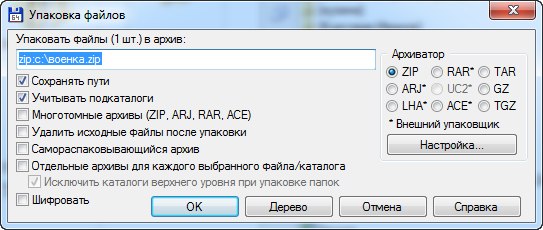
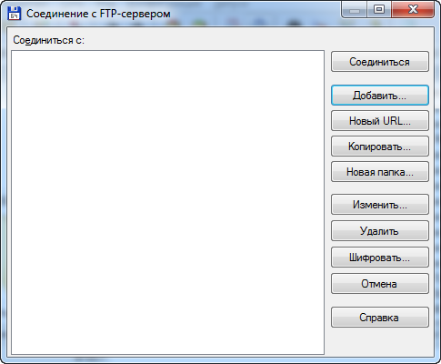

Total Commander - это самый мощный и стабильный файловый менеджер для Windows. Total Commander продолжает добрую традицию двухпанельных файловых менеджеров, но отличается повышенным удобством и функциональностью, поддерживает плагины, имеет множество встроенных полезных инструментов. Программа обрабатывает архивы и позволяет Вам легко копировать файлы в архив и из него. Включает в себя расширенное копирование, перемещение, переименование, и удаление полных деревьев; поддержку drag-and-drop; утилиту запуска, которая позволяет Вам размещать часто используемые программы в выпадающее меню; FTP-клиент; прямой доступ к Сетевому окружению; история посещаемых директорий и запускаемых файлов, способность разбивать большие файлы на небольшие части и объединять их.
Главное окно программы представлено ниже. Первое что бросается в глаза, так это две панели, в каждом из которых можно открыть как одинаковые, так и разные разделы и вести параллельную работу.
Это примечательно тем, что упрощает работу, особенно при копировании файлов. Панели инструментов может казаться непонятным для новичков. Но всё довольно просто.
Хоть в панель инструментов добавили излишние команды, но основные такие как копирование в буфер, поиск, изменение вида содержимого, навигация, обновление.
И хочу отметить, что для полноценного использования утилиты, необходимо зарегистрироваться.
Total Commander относительная универсальная утилита. Она помимо своих основных функций, позволяет распокавать и запаковать файлы. Есть возможность подключения к сетевому серверу и к FTP-серверу.


Настройка представляет собой огромный спектр возможностей начиная от вида окна, изменения шрифта, значков, стиля, языка и до настройки основных операций.
Так же можно настроить простые возможности архиватора и FTP-протокола
Весьма полезная операция Total Commander - это групповое переименование. В окне настроек вы можете увидеть список выбранных файлов для переименования и внесения изменений в их название.
Самый простой способ сделать групповое переименование – присвоить всем документам одинаковое имя или же использовать счетчик, что бы каждый файл имел уникальное имя с постепенно увеличивающимся значением.
Вы можете задать начальное значение счетчика, шаг и количество цифр, которые будут добавлены к имени.
Попробуем с помощью данной операции переименовать файлы в папке "военка". В маске имени поставим счетчик через пробел имя файла и дату. Расширения оставим без изменения. Установим регистр так, чтобы все слова начинались с заглавной буквы. И составим параметр счетчика, начать с цифры 1 с шагом 2. И сохраним шаблон. В окне сразу показывается какой будет результат:
Вот и результат проделанной операции:
Функциональность Total Commander можно расширять с помощью скриптов (PowerPro, AutoHotkey) и плагинов. Доступно несколько видов таких плагинов: Архиваторные плагины (Packer Plugins, WCX), Плагины внутренней программы просмотра (Lister Plugins, WLX),
Плагины файловой системы (File System Plugins, WFX), Информационные плагины (Content plugins, WDX). Плагины быстрого поиска.
Подробнее про их составляющие и возоможности можете просмотреть на википедии
(https://ru.wikipedia.org/wiki/Total_Commander#Плагины)
Подробнее про Total Commander можете рассмотреть на русскоязычном сайте программы: https://wincmd.ru/
или же на официальном сайте разработчиков: https://www.ghisler.com/